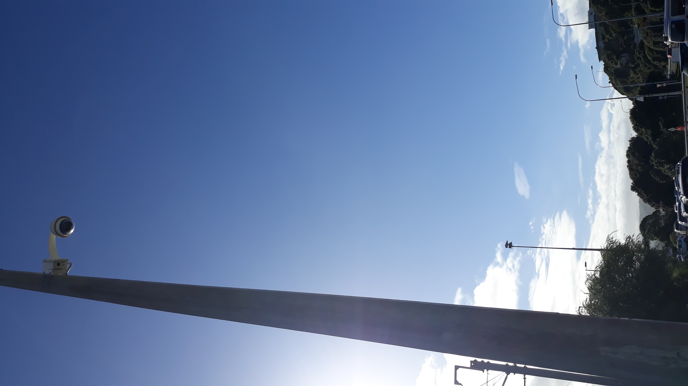
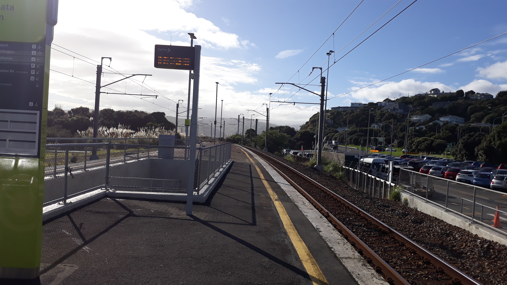

Security Camera
They are very common in wellington city and also society today has alot of buisnesses and services require them for security purposes as surveillance is needed all the time 24/7 to ensure and provide safety and protection of the places and civilians that they are being placed at. as this is an important network infrastructure In Wellington City

Powerlines
Powerlines are also an important network infrastructure as they are very useful as they provide electricity throughout all of Wellington city which is very critical for us as citizens to have electricity in order to live and have Internet power lights and anything else requiring electricity in our daily lives by citienz.
